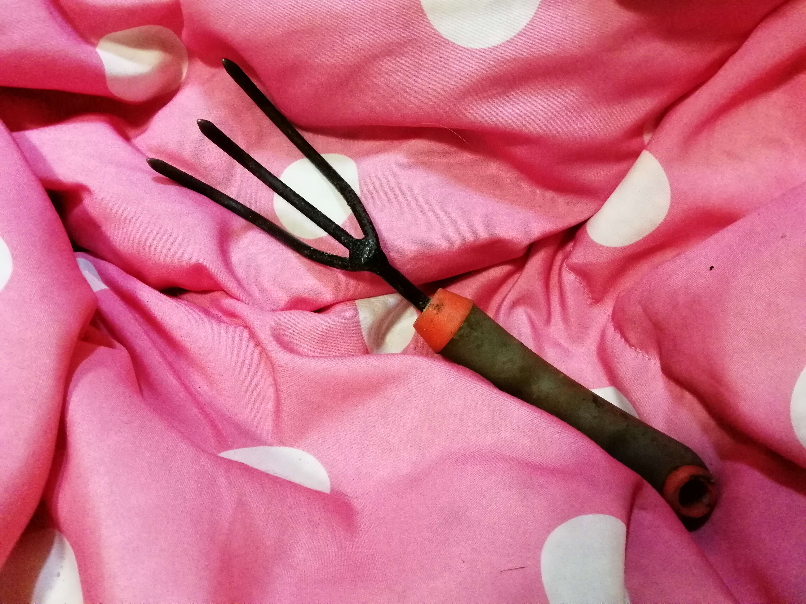

At times, your collection may be too good for your own display. You may become interested in smaller specimens or fluorescent specimens, in which case, you can require additional supplies, which is what we will cover here. Attached are also two videos about supplies and rock lover gift ideas that can be completed with additional items.
| Item | Description | Price | Image |
|---|---|---|---|
| Loupe | Loupes are useful and affordable to act as a portable alternative for magnifying glasses. When combined with a lanyard, you can easily carry it in a purse or hang it around your neck. To use a loupe, you put it near a specimen you want to study and look through the glass to observe more detail. | ~$12-$30 CAD | |
| Microscope | Microscopes are used to identify smaller specimens and look at them in detail. They are primarily used for microminerals that may not otherwise be easy to appreciate. For example, you may have traces of silver, copper, or even tiny crystals of quartz. | ~$90-$700 CAD | |
| UV Flashlight | Ultra-violet flashlights are pretty self explanatory. Fluorescent minerals require these to show their true colours. When purchasing, you should look for long wave lights rather than short wave because those are more dangerous and can cause damage to your eyes easily. Be careful when using any form of UV flashlight. Some flashlights are also better quality than others, so play around until you find your match! | ~$12-$40 CAD | |
| Plastic Baggies | Once your collection starts growing, you may have specimens that you no longer want. The ideal form of protecting for when you stash rocks is to insert a foam or soft divider of some sort. Sometimes, this is not only time consuming but also a waste of resources. The next best tip is to store them in plastic baggies instead. They provide a little protection and keep you specimen together with its label. | ~$10-$25 CAD |
Have you ever wanted to go collecting yourself? Well, before that, there are some supplies that are strongly recommended that you have before you go out! These are not only to ensure safety, but also to ensure success, wherever you may be collecting!
| Item | Description | Image |
|---|---|---|
| Safety Goggles | Safety goggles do exactly what you'd expect; they keep your eyes safe and protected! Oftentimes, pieces of small rock can fly into your face as your hitting it with a hammer. The downsides of goggles are that they can get foggy, though you can purchase special spray with them. The reason you should own a pair is because unlike hard hats, most sites don't provide these for you. | |
| Safety Boots | The most important aspect to look for in safety boots is that they are CSA approved. This can be found through a green triangle on the side of the boot (as shown in the image on the right). If you are unable to obtain CSA approved boots, the next best option is to wear sturdy footwear. This is to protect your feet from fallen rocks or from any other hazards while collecting. | |
| Safety Vest | Safety vests are used to ensure that you are clearly visible, whether you are in the midst of a forest or digging in a pile of boulders. The most common style is to have stripes on the front of them and a big X on the back. Even if you don't believe it to be useful, it's still important. There are certain sites for example, where you may be collecting next to forklifts that will have operators who may miss you. | |
| Fork | To keep it convenient, it's generally not recommended to bring a large garden fork onto a site. Instead, you can consider purchasing a smaller version that achieves the same result on a smaller scale, which also means more detailed scavenging. Forks while collecting are usually used for plowing through loose dirt or debris as the tines are not very strong or easy to exert force on. |  |
| Chisel | These may be one of the most useful tools when dealing with hard rock. Chisels can be used to make or expand cracks in the rock so that you can access whatever crystals may be inside. You can even purchase a variety of sizes for your convenience. When using a chisel, it's important that you don't accidentally hurt yourself with the tool itself or the hammer that punches it in. | |
| Hammer | This is the hammer that goes along with the chisel. Without it, you are much less likely to be able to create any form of change in the rock you're operating on. To use a hammer, you simply position the chisel into the rock like a nail and hammer it down on the side that's flat. These hammers are known to be heavy, so if you are uncomfortable carrying it around, there are alternatives such as using a geological hammer instead. | |
| Geological Hammer | When collecting, you should never use a carpenter's hammer since they are not suitable for rock and can break on impact. Your alternatives are masonry hammers or geological hammers. To differentiate them, look at the back end of the hammer. For geological hammers, it is flat. For carpenter's hammers, there is a small indent used for extracting nails. |